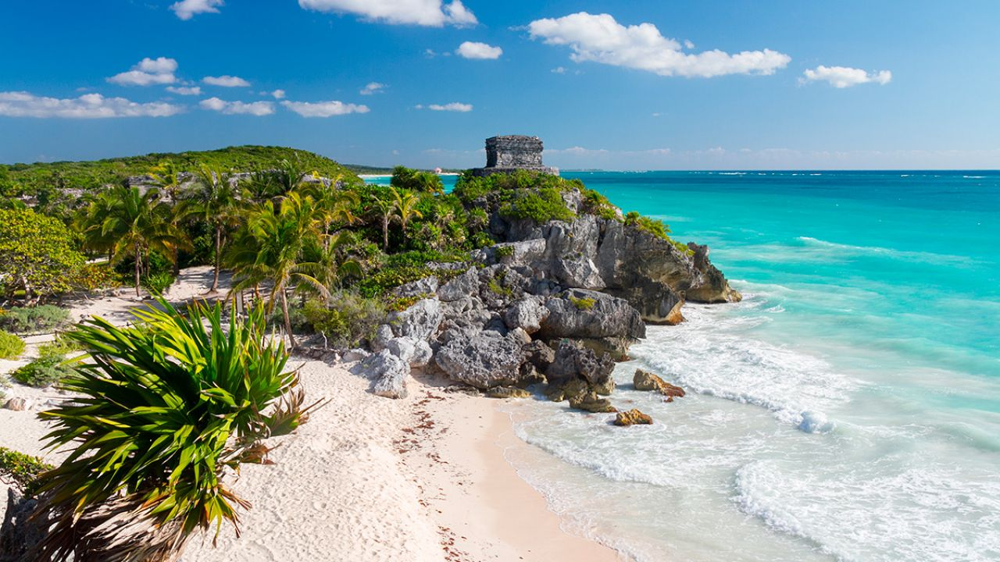
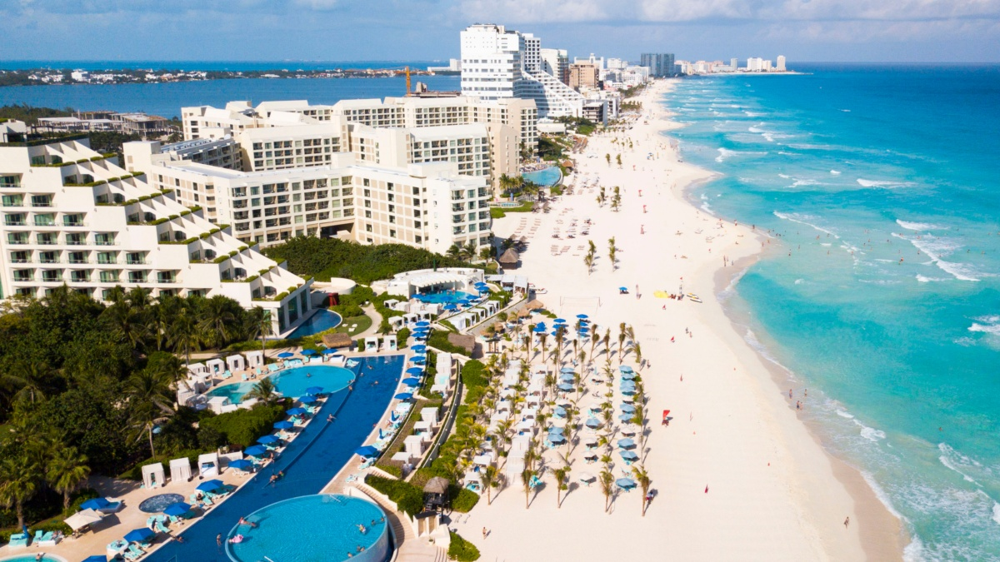
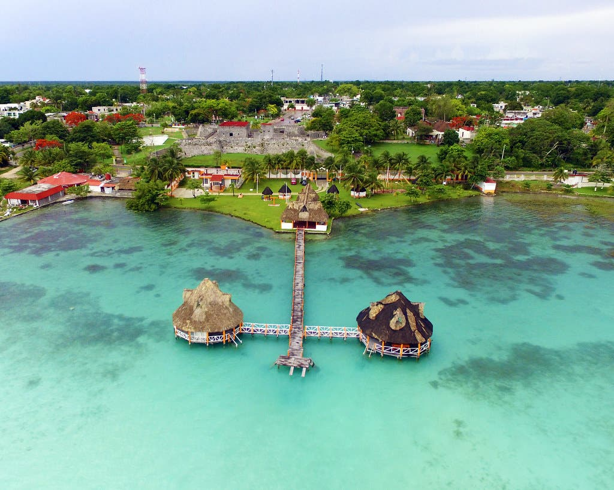
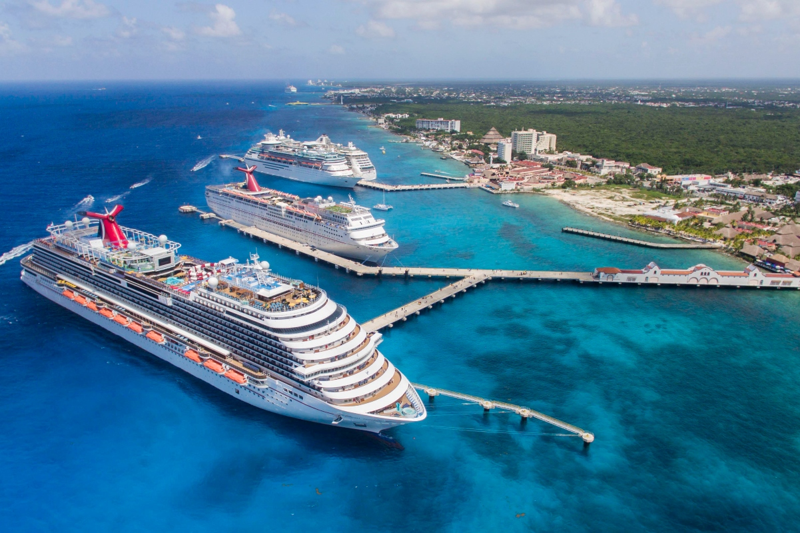
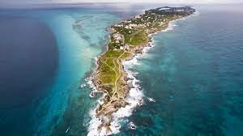
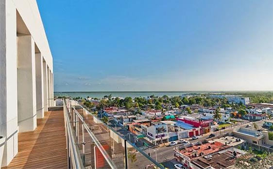

Cancun, Quintana Roo :)
En el mar la vida es mas sabrosa...

likes: 0
Centro Arqueologico de Tulum
Tulum es el sitio más emblemático de la costa de Quintana Roo, debido a su ubicación privilegiada y la excelente conservación de sus edificios y pinturas murales. Es bien conocida su muralla, que delimita al conjunto principal por sus lados norte, sur y oeste, ya que el sector oriental mira al mar Caribe; tiene cinco accesos y dos torres de vigilancia.

likes: 0
Zona Hotelera, cancún
El área de la Zona Hotelera abarca varios subdistritos y es sede de complejos turísticos todo incluido, restaurantes internacionales y playas de arena para relajarse.La Torre Escénica del Embarcadero de Cancún ofrece vistas de la ciudad. Los centros comerciales ofrecen marcas internacionales y la vida nocturna incluye bares íntimos y grandes clubes de salsa.

likes: 0
Laguna de Bacalar
El paisaje que conforma la laguna de Bacalar es de una exoticidad cautivadora. Rodeada de manglares y exuberante vegetación, puede recorrerse en pequeñas canoas para disfrutar sus casi 50 kilómetros de longitud y así ser conscientes de la maravillosa policromía de sus mansas aguas.En la entrada del pueblo se encuentra otro espacio imperdible: el Cenote Azul, un impresionante ojo de agua que de extiende en medio de una espesa vegetación que hace contraste con el añil de sus aguas.

likes: 0
Cozumel
Cozumel, una isla mexicana en su mayoría subdesarrollada en el Mar Caribe, es un popular puerto de escala de cruceros famoso por su buceo. En el Parque Nacional Arrecifes de Cozumel, hay puntos de buceo alrededor de una sección del Arrecife Mesoamericano y las esculturas sumergidas del Museo Subacuático de Arte.

likes: 0
Isla Mujeres
La Isla Mujeres es una isla mexicana en el mar Caribe, a 13 km de la costa de Cancún. Es un destino vacacional conocido por sus playas, como la Playa Norte, complejos turísticos y también por el esnórquel y el buceo en los arrecifes de coral circundantes.

likes: 0